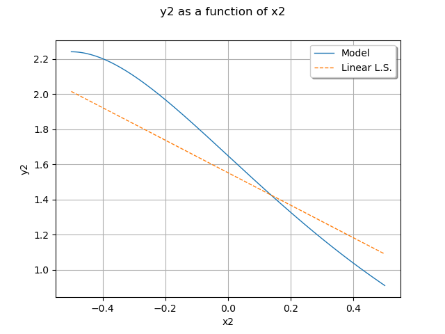

Note
Go to the end to download the full example code
Create a linear least squares model¶
In this example we are going to create a global approximation of a model
response based on a linear function using the LinearLeastSquares class.
We consider the function  is defined by:
is defined by:
![h(x_1, x_2) = \left(\cos(x_1 + x_2), (x_2 + 1) e^{x_1 - 2 x_2} \right)]()
for any  .
Since the output is a dimension 2 vector, the model has vector
coefficients.
We use the linear model:
.
Since the output is a dimension 2 vector, the model has vector
coefficients.
We use the linear model:
![\vect{y} \, \approx \, \widehat{\vect{h}}(\vect{x}) \,
= \, \sum_{k=0}^2 \; \vect{a}_k \; \psi_k(\vect{x})]()
for any where  are the vector coefficients and
are the vector coefficients and  are the basis functions.
This implies that each marginal output
are the basis functions.
This implies that each marginal output  is approximated by the linear model:
is approximated by the linear model:
![\widehat{h}_i(\vect{x}) \,
= \, \sum_{k=0}^2 \; a_{ki} \; \psi_k(\vect{x})]()
for any and any  where
where  is the
is the  -th coefficient of the
-th coefficient of the  -th output
marginal:
-th output
marginal:

for  .
We consider the basis functions:
.
We consider the basis functions:
![\psi_0(\vect{x}) & = 1 \\
\psi_1(\vect{x}) & = x_1 \\
\psi_2(\vect{x}) & = x_2 \\]()
for any .
import openturns as ot
import openturns.viewer as viewer
from matplotlib import pylab as plt
ot.Log.Show(ot.Log.NONE)
Define the model¶
Prepare an input sample.
Each point is a pair of coordinates  .
.
inputTrain = [[0.5, 0.5], [-0.5, -0.5], [-0.5, 0.5], [0.5, -0.5]]
inputTrain += [[0.25, 0.25], [-0.25, -0.25], [-0.25, 0.25], [0.25, -0.25]]
inputTrain = ot.Sample(inputTrain)
inputTrain.setDescription(["x1", "x2"])
inputTrain
Compute the output sample from the input sample and a function.
formulas = ["cos(x1 + x2)", "(x2 + 1) * exp(x1 - 2 * x2)"]
model = ot.SymbolicFunction(["x1", "x2"], formulas)
model.setOutputDescription(["y1", "y2"])
outputTrain = model(inputTrain)
outputTrain
Linear least squares¶
Create a linear least squares model.
algo = ot.LinearLeastSquares(inputTrain, outputTrain)
algo.run()
Get the linear term.
algo.getLinear()
Get the constant term.
algo.getConstant()
Get the metamodel.
responseSurface = algo.getMetaModel()
Plot the second output of our model with  .
.
graph = ot.ParametricFunction(model, [0], [0.5]).getMarginal(1).draw(-0.5, 0.5)
graph.setLegends(["Model"])
curve = (
ot.ParametricFunction(responseSurface, [0], [0.5])
.getMarginal(1)
.draw(-0.5, 0.5)
.getDrawable(0)
)
curve.setLineStyle("dashed")
curve.setLegend("Linear L.S.")
graph.add(curve)
graph.setLegendPosition("topright")
graph.setColors(ot.Drawable.BuildDefaultPalette(2))
view = viewer.View(graph)
plt.show()
